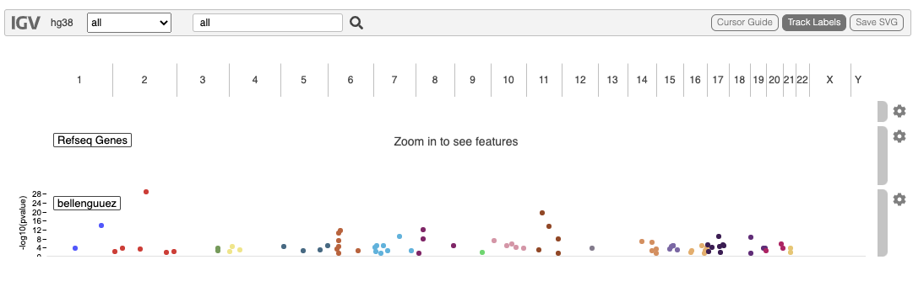
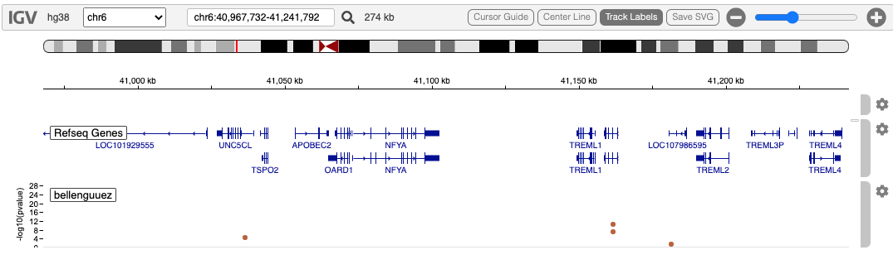
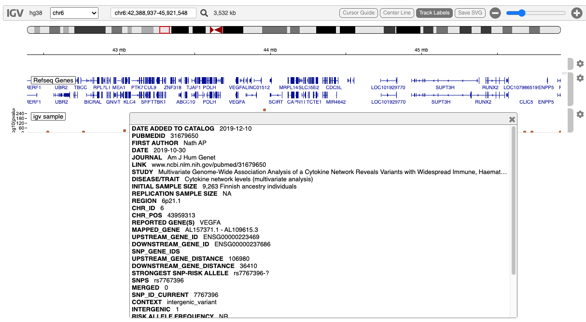

GWAS Tracks
Paul Shannon
2022-08-05
v07.gwas.RmdOverview
Genome Wide Association Studies (GWAS) are often viewed in a “manhattan plot”. igv.js supports thesein two formats: a fixed bed format, and the traditional flexible, multi-column file format in which GWAS results are often summarized.
We support only the latter since its flexibility can be used with the five-column fixed bed format as well.
The data from GWAS studies is rather sparse, usually with no more than a few hundred variant hotspots which associate with the phenotype of interest. Another feature of these data is that the community is often most concerned with the statistical significance of the association. This is expressed as a pvalue. A minus-log10 transform of the pvalue controls the height of the rendered variant in the manhattant plot.
Support for this track type in igvR is new (summer 2022) and unpolished. Control of autoscaling and fixed scaling needs work.
There are two relevant classes, shown here with their constructors:
- GWASTrack(“bellenguuez”, tbl.gwas, chrom.col=1, pos.col=2, pval.col=5, trackHeight=80)
- GWASUrlTrack(“igv sample”, url, chrom.col=12, pos.col=13, pval.col=28)
All the arguments are the same, except for the second one, which is either a local data.frame in memory, or a url pointing to a remote file served over http.
Demostration: a local data.frame with 5 columns
Here we use a 5-column data.frame from a file hosted in igvR’s extdata, GWAS results from a 2022 Nature Genetics paper, New insights into the genetic etiology of Alzheimer’s disease and related dementias.
Its first few rows:
chrom start end name score
1 chr1 109345809 109345810 rs141749679 2.36e-04
2 chr1 207577222 207577223 rs679515 1.51e-14
3 chr2 9558881 9558882 rs72777026 4.14e-03
4 chr2 37304795 37304796 rs17020490 2.33e-04
5 chr2 105749598 105749599 rs143080277 6.29e-04
6 chr2 127135233 127135234 rs6733839 2.06e-30
library(igvR)
igv <- igvR()
setBrowserWindowTitle(igv, "AD GWAS")
setGenome(igv, "hg38")
tbl.gwas <- read.table(system.file(package="igvR", "extdata", "gwas", "bellenguez.bed"),
sep="\t", as.is=TRUE, header=TRUE, nrow=-1)
track <- GWASTrack("bellenguuez", tbl.gwas, chrom.col=1, pos.col=2, pval.col=5, trackHeight=80)
displayTrack(igv, track)
Zoomed into the neighborhood of TREM2, a gene independently known to be associated with Alzheimer’s Disease.

Demonstration: a remote GWAS file with 34 columns
This file is more typical of that used in GWAS studies. These are the columns:
- DATE ADDED TO CATALOG
- PUBMEDID
- FIRST AUTHOR
- DATE
- JOURNAL
- LINK
- STUDY
- DISEASE/TRAIT
- INITIAL SAMPLE SIZE
- REPLICATION SAMPLE SIZE
- REGION
- CHR_ID
- CHR_POS
- REPORTED GENE(S)
- MAPPED_GENE
- UPSTREAM_GENE_ID
- DOWNSTREAM_GENE_ID
- SNP_GENE_IDS
- UPSTREAM_GENE_DISTANCE
- DOWNSTREAM_GENE_DISTANCE
- STRONGEST SNP-RISK ALLELE
- SNPS
- MERGED
- SNP_ID_CURRENT
- CONTEXT
- INTERGENIC
- RISK ALLELE FREQUENCY
- P-VALUE
- PVALUE_MLOG
- P-VALUE (TEXT)
- OR or BETA
- 95% CI (TEXT)
- PLATFORM [SNPS PASSING QC]
- CNV
Here we create the track and display it:
url <- "https://s3.amazonaws.com/igv.org.demo/gwas_sample.tsv.gz"
track <- GWASUrlTrack("igv sample", url,chrom.col=12, pos.col=13, pval.col=28)
displayTrack(igv, track)First, the whole genome view:
 Now, zooin into on chromsome 6, and click on any variant in the display (here we chose rs7767396) the full data from the multi-column gwas file is available.
Now, zooin into on chromsome 6, and click on any variant in the display (here we chose rs7767396) the full data from the multi-column gwas file is available.

Session Info
sessionInfo()
#> R version 4.2.0 (2022-04-22)
#> Platform: x86_64-apple-darwin17.0 (64-bit)
#> Running under: macOS Big Sur/Monterey 10.16
#>
#> Matrix products: default
#> BLAS: /Library/Frameworks/R.framework/Versions/4.2/Resources/lib/libRblas.0.dylib
#> LAPACK: /Library/Frameworks/R.framework/Versions/4.2/Resources/lib/libRlapack.dylib
#>
#> locale:
#> [1] en_US.UTF-8/en_US.UTF-8/en_US.UTF-8/C/en_US.UTF-8/en_US.UTF-8
#>
#> attached base packages:
#> [1] stats graphics grDevices utils datasets methods base
#>
#> other attached packages:
#> [1] BiocStyle_2.25.0
#>
#> loaded via a namespace (and not attached):
#> [1] knitr_1.39 magrittr_2.0.3 R6_2.5.1 ragg_1.2.2 rlang_1.0.4
#> [6] fastmap_1.1.0 highr_0.9 stringr_1.4.0 tools_4.2.0 xfun_0.31
#> [11] cli_3.3.0 jquerylib_0.1.4 systemfonts_1.0.4 htmltools_0.5.3 yaml_2.3.5
#> [16] digest_0.6.29 rprojroot_2.0.3 pkgdown_2.0.6 bookdown_0.27 textshaping_0.3.6
#> [21] BiocManager_1.30.18 purrr_0.3.4 sass_0.4.2 fs_1.5.2 memoise_2.0.1
#> [26] cachem_1.0.6 evaluate_0.15 rmarkdown_2.14 stringi_1.7.8 compiler_4.2.0
#> [31] bslib_0.4.0 desc_1.4.1 jsonlite_1.8.0